284
Answers to the odd-numbered exercises appear in Appendix B.
Review Your Knowledge
8.01 To compute either a single-sample z test or a single-sample t test, one must know the population _______.
8.02 Two sample t tests compare the _______ of one sample to the _______ of another sample.
8.03 Two sample t tests use _______ means to draw a conclusion about _______ means.
8.04 A classic experiment might use a two-sample t test to compare a _______ group to an _______ group.
8.05 Two different types of two-sample t tests are the _______ -samples t test and the _______ -samples t test.
8.06 If each sample in a two-sample t test is a random sample from its population, then the test is an _______-samples t test.
8.07 If the selection of cases for one sample determines the cases selected for the other sample, then the samples are _______ samples.
8.08 _______ is the abbreviation for the total sample size in an independent-samples t test; _______ and _______ are the abbreviations for the sizes of the samples in the two groups.
8.09 In order to use an independent-samples t test to analyze data from two samples, the samples have to be _______ and one needs to know the _______ for each sample.
8.10 The nonrobust assumption for an independent-samples t test is _______.
8.11 The _______ assumption for the independent-samples t test is the one that allows a researcher to generalize the results back to the larger population.
8.12 The _______ assumption for the independent-samples t test says that the amount of variability in the two populations is about equal.
8.13 Researchers are often willing, for an independent-samples t test, to assume that the dependent variable is _______.
8.14 One tests the _______ assumption for the independent-samples t test by comparing the _______ of the two samples.
8.15 The hypotheses for an independent-samples t test are either directional or _______ directional.
8.16 The null hypothesis for a two-tailed independent-samples t test, expressed mathematically, is _______.
8.17 The alternative hypothesis for a two-tailed independent-samples t test, expressed mathematically, is _______.
8.18 If the null hypothesis for an independent-samples t test is true, then the observed difference between the sample means is due to _______.
8.19 The critical value of t is the border between the _______ and the _______ zones of the sampling distribution of _______.
8.20 t tests commonly are _______ tailed and have _______ set at .05.
8.21 To calculate the degrees of freedom for an independent-samples t test, subtract _______ from N.
8.22 For a two-tailed test, if t _______ –tcv , reject H0.
8.23 For a two-tailed test, if t _______ tcv , reject H0
8.24 When writing the hypotheses for a one-way test, it is easier if one formulates the _______ hypothesis first.
8.25 ________ is the variance of the two samples combined.
8.26 To calculate 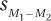, one needs to know the ________ variance, the total sample _______, and the sample _______ of each group individually.
8.27 The numerator in the t equation is the difference between the sample _______.
8.28 If a researcher rejects the _______, the researcher is forced to accept the _______.
8.29 If a researcher reports the results of an independent-samples t test as showing a statistically significant difference, the researcher has _______ the null hypothesis.
285
8.30 If one rejects the null hypothesis for an independent-samples t test, then look at the sample _______ in order to comment on the _______ of the difference.
8.31 The .05 in APA format indicates that there is a _______% chance of a Type I error.
8.32 If the result of an independent-samples t test is written as t (23) = 5.98, p < .05, then N was _______.
8.33 In APA format, _______ means one rejected a null hypothesis with alpha set at .05 and _______ means one failed to reject it.
8.34 For an independent-samples t test, calculate _______ or ________ to quantify the size of the effect.
8.35 If there is absolutely no effect of the independent variable on the dependent variable, then d equals _______.
8.36 A d of ≈ _______ is considered a medium effect.
8.37 r2 calculates the percentage of variability in the _______ that is accounted for by the _______.
8.38 The 95% confidence interval for the difference between population means estimates how _______ or how _______ the difference between the population means might be.
8.39 The 95% confidence interval for the difference between population means probably captures the real difference between the _______.
8.40 If the 95% confidence interval for the difference between population means fails to capture zero for a two-tailed test with α = .05, then one has _______ the null hypothesis.
8.41 If the 95% confidence interval for the difference between population means comes close to zero, the size of the effect in the population may be _______.
8.42 If the 95% confidence interval for the difference between population means is wide, a reasonable suggestion is to _______ the study with a larger _______.
8.43 If sample size increases but the sample means and standard deviations don’t change, then of the three values calculated for the interpretation of the independent-samples t test, the one that will not change is _________.
8.44 ________ calculate the size of the effect in the sample; a confidence interval calculates it for the ________.
Apply Your Knowledge
Selecting a test
8.45 A theology professor was curious whether children were as religious as their parents. He obtained a random sample of students at his school and administered an interval-level religiosity scale to them. Using the same scale, he collected information from the same-sex parent for each student. What statistical test should he use to see if there is a difference between a parent’s and a child’s level of religiosity?
8.46 A demographer working for the U.S. Census Bureau wants to compare salaries for urban vs. rural areas. She gets a sample of psychologists who live in urban areas and a sample of psychologists who live in rural areas. From each, she finds out his or her annual income. What statistical test should she use to see if a difference exists in a psychologist’s income as a function of residential status?
8.47 An exercise physiologist classifies people—on the basis of their body mass index, heart rate, and lung capacity—as (a) above average in terms of fitness or (b) below average in terms of fitness. He then directs the same people to walk on a treadmill, individually, at an increasing speed until they can no longer walk. The speed of the treadmill when a person maxes out on walking is the dependent variable. What statistical test should the physiologist use to see if there is a difference in maximum walking speed based on fitness level?
8.48 Some people have white coat hypertension. That is, they grow anxious when a person with a white coat and a stethoscope walks into the examining room to take their blood pressure. As a result, their blood pressure increases. A family practitioner believes this is quite common. To test her theory, she puts together a random sample of 50 patients and takes two blood pressure measurements, one when each patient first walks into the room and a second, unexpected one after about 15 minutes. What statistical test should she use to see if the two blood pressures differ?
286
Checking the assumptions
8.49 A developmental psychologist has randomly assigned men to two different groups. After sitting alone at a computer monitor to read a series of stories, each man is asked to rate his level of acceptance of gender typing. (Gender-typed people believe that there are certain roles men should fulfill and certain roles women should fulfill.) Higher scores on the scale indicate higher levels of gender typing; scores on the scale are normally distributed. One group of men, the control group, read gender-typed stories and the other group, the experimental group, read non-gender-typed stories. The researcher found MC = 75, sC = 35, ME = 55, sE = 8. The psychologist is planning to use an independent-samples t test to see if the experimental manipulation has had an impact. Check the assumptions and decide if it is OK to proceed with the planned test.
8.50 A clinical psychologist is studying the effects of an experimental medication on depression. He randomly assigns the next 50 patients at his clinic to receive either (a) Prozac or (b) a placebo. Each patient is treated individually. After eight weeks of treatment, each patient completes an interval-level depression scale. The standard deviations for the two groups are similar and the psychologist believes depression level is normally distributed. The psychologist is planning to use an independent-samples t test to see if there are differences between the two groups at the eight-week mark. Check the assumptions and decide if it is OK to proceed with the planned test.
Writing hypotheses
8.51 An infectious disease specialist is using an independent-samples t test to compare the effectiveness of two treatments for the common cold. (a) Write out H0 and H1 and (b) explain what they mean.
8.52 A medical educator is using an independent-samples t test to compare the age of physicians who complete the minimum number of continuing education hours per year vs. those who complete extra hours of continuing education. (a) Write out H0 and H1 and (b) explain what they mean.
8.53 There is a lot of evidence that fluoride reduces cavities but not all communities add it to their drinking water. A dentist, who expects to replicate this earlier work, classifies randomly selected communities in his state as (1) adding fluoride to their drinking water or (2) not adding fluoride to their drinking water. He then goes to high schools in these communities, inspects the mouths of all high school seniors, and calculates, for each community, the percentage of these students with cavities. He will compare the means for these values between the two types of communities. (a) Write out H0 and H1 and (b) explain what they mean.
8.54 The health department physician in a suburban community warned cat owners about a risk of infection. Cats leave their litter boxes and then jump on counters, trailing bacteria behind them. To highlight the greater risk to the health of cat owners than dog owners, the physician went to the homes of cat owners and dog owners, swabbed kitchen counters, cultured the swabs, and counted the number of bacteria that grew. She planned to use a t test to compare the mean number of bacteria in cat-owning households vs. dog-owning houses. (a) Write out H0 and H1 and (b) explain what they mean.
Finding tcv
8.55 If n1 = 223 and n2 = 252, determine the critical value of t for an independent-samples t test, two-tailed, α = .05.
8.56 If n1 = 17 and n2 = 18, determine the critical value of t for an independent-samples t test, two-tailed, α = .05.
287
8.57 If n1 = 46 and n2 = 46, determine the critical value of t for an independent-samples t test, two-tailed, α = .01.
8.58 If n1 = 13 and n2 = 15, determine the critical value of t for an independent-samples t test, one-tailed, α = .05, where the numerator of the t equation is expected to be negative.
Writing the decision rule
8.59 If tcv = 2.086, write the decision rule for a two-tailed test for (a) when to reject the null hypothesis and (b) when to fail to reject the null hypothesis.
8.60 If tcv = 2.396, write the decision rule for a one-tailed test for (a) when to reject the null hypothesis and (b) when to fail to reject the null hypothesis. (Hint: Contemplate the sign of tcv and what that means about what the researcher believes.)
Calculating the pooled variance
8.61 Given n1 = 12, s1 = 7.4, n2 = 13, and s2 = 8.2, calculate 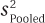.
8.62 Given n1 = 15, s1 = 3.6, n2 = 16, and s2 = 4.3, calculate .
Calculating the standard error of the difference
8.63 Given n1 = 45, n2 = 58, and 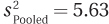, calculate .
8.64 Given n1 = 23, n2 = 19, and 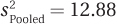, calculate .
8.65 Given n1 = 45, n2 = 58, s1 = 5.98, and s2 = 7.83, calculate .
8.66 Given n1 = 22, n2 = 28, s1 = 9.58, and s2 = 11.13, calculate .
Calculating t
8.67 Given M1 = 57, M2 = 68, and 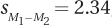, calculate t.
8.68 Given M1 = 5.5, M2 = 4.5, and 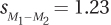, calculate t.
8.69 Given M1 = –5, s1 = 4.6, n1 = 72, M2 = –1, s2 = 3.3, and n2 = 60, calculate t.
8.70 Given M1 = 48, s1 = 15.0, n1 = 8, M2 = 52, s2 = 14.2, and n2 = 11, calculate t.
Deciding whether the null hypothesis was rejected
8.71 Given M1 = 98, M2 = 103, tcv = 2.060, t = 2.060, and a two-tailed test with α = .05, (a) decide whether the null hypothesis was rejected or not, (b) tell whether the difference between sample means is a statistically significant one or not, and (c) make a statement about the direction of the difference between the sample means.
8.72 Given M1 = 88, M2 = 83, tcv = 2.042, t = 2.040, and a two-tailed test with α = .05, (a) decide whether the null hypothesis was rejected or not, (b) tell whether the difference between sample means is a statistically significant one or not, and (c) make a statement about the direction of the difference between the population means.
Using APA format
8.73 Given N = 23 and t = 2.0723, report the results in APA format for a two-tailed test, α = .05.
8.74 Given N = 35 and t = 2.0321, report the results in APA format for a two-tailed test, α = .05.
8.75 Given N = 10 and t = 2.3147, report the results in APA format for a two-tailed test, α = .05.
8.76 Given N = 73, α = .05, one-tailed, t expected to be negative, and t = –1.65, report the results in APA format.
Calculating effect sizes
8.77 Given M1 = 12, M2 = 17, and 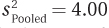, (a) calculate d and (b) classify the size of the effect.
8.78 Given M1 = 88, M2 = 85, and 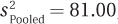, (a) calculate d and (b) classify the size of the effect.
8.79 Given t = 9.87 and N = 73, calculate r2.
8.80 Given t = 1.34 and N = 49, calculate r2.
Calculating confidence intervals
8.81 Given M1 = 31, M2 = 24, 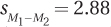, and tcv = 2.045, (a) calculate the 95% confidence interval for the difference between population means, and (b) based on the confidence interval, decide if the null hypothesis should be rejected for a nondirectional test with α = .05.
8.82 Given M1 = –13, M2 = –18, 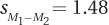, and tcv = 2.015, (a) calculate the 95% confidence interval for the difference between population means, and (b) based on the confidence interval, decide if the null hypothesis should be rejected for a nondirectional test with α = .05.
288
Writing a four-point interpretation
8.83 An elementary education researcher was interested in seeing how the color used to make corrections on students’ papers affected their self-esteem. He assembled first graders and asked them to take a third-grade math test. He told the first graders that the test would be very difficult for them and they might not get very many answers right, but he needed their help. After the students were each called into a room to take the test alone, he pretended to grade it. Everyone had 25% of their answers marked wrong. For half the kids, these answers were marked with red ink, and for the other half, the “incorrect” answers were marked with pencil. Each child then took a self-esteem inventory on which higher scores indicate more self-esteem. The 17 red ink (control group) kids had a mean of 23.00 (s = 5.00); the 10 pencil (experimental group) kids had a mean score of 29.00 (s = 5.00). Given that information and the rest of the results (below), write a paragraph interpreting the results:
α = .05, two-tailed
tcv = 2.060
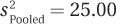
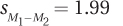
t = 3.02
d = 1.20
r2 = 26.61%
95% CIμDiff [1.90, 10.10]
8.84 A nutritionist compared the effectiveness of an online diet program to that of an in-person diet program. After three months, she compared the number of pounds of weight lost. The control group (in-person) lost a mean of 18.00 pounds (s = 14.50, n = 16) and the experimental group (online) lost 16.00 pounds (s = 13.30, n = 21). Using that and the information below, write a paragraph interpreting the results:
α = .05, two-tailed
tcv = 2.030
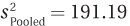
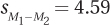
t = 0.44
d = –0.14
r = 0.54%
95% CIμDiff [–11.32, 7.32]
Completing all six steps of hypothesis testing
8.85 A physician compared the cholesterol levels of a representative sample of Americans who ate an American diet vs. a representative sample of those who followed a Mediterranean diet. Below are the means, standard deviations, and sample sizes for both samples. Though in some studies a Mediterranean diet has been shown to be beneficial, this was one of the first studies on an American population and the physician had made no advance predictions about the outcome.
American diet (control): M = 230, s = 24, n = 36
Mediterranean (experimental): M = 190, s = 26, n = 36
8.86 An addictions researcher measured tolerance to alcohol in first-year and fourth-year college students. She gave participants a standard dose of alcohol and then had them walk along a narrow line painted on the floor. The higher the percentage of the distance that they were on the line, the greater their tolerance to alcohol. The researcher expected that the older students would show more tolerance to alcohol. Here is the relevant information:
1st year (control): M = 30, s = 12.5, n = 20
4th year (experimental): M = 48, s = 14.6, n = 16
Expand Your Knowledge
8.87 A researcher completes an independent-samples t test and finds that the probability of two sample means being this far apart, if the null hypothesis is true, is less than .05. Which of the following is true?
289
μ1 = μ2
M1 ≠ μ1
There probably is no difference between the two population means.
There probably is a difference between the two population means.
Sufficient evidence does not exist to draw any conclusion about the population means.
8.88 Which result cannot be true for an independent-samples t test?
A researcher has rejected the null hypothesis and found d = 1.50.
A researcher has failed to reject the null hypothesis and found d = 1.50.
A researcher has rejected the null hypothesis and found d = 0.10.
A researcher has failed to reject the null hypothesis and found d = 0.10.
Any of these results can be true.
None of these results can be true.
8.89 A consumer group is planning to do 2 two-sample t tests. In Test 1, they are going to put together a random sample of items at a jewelry store and compare the prices to a random sample of items at a bookstore, in order to see which store is more expensive. In Test 2, they are planning to compare a random sample of textbooks purchased at a campus bookstore to the same books purchased through an online bookseller, in order to see which store is more expensive. (a) Determine which test is an independent-samples t test and which a paired-samples t test. (b) It sounds like each test is answering the same question, “Which store is more expensive?” Rewrite the questions so that they more accurately pose the question that the test answers.
8.90 Explain why the critical value of t, one-tailed, α =.05 is the same as the critical value of t, two-tailed, α = .10.
8.91 Margery collected some data from two independent groups and analyzed them with an independent-samples t test. No assumptions were violated and she rejected the null hypothesis. Yet, when she calculated a confidence interval for the difference between population means, the confidence interval captured zero. Explain how this is possible.
8.92 Dr. Goddard developed a technique that he thought would increase IQ in adults. He obtained a random sample of 52 adult Americans and randomly assigned half of them to a control group and half to the experimental group. He did nothing to the control group, but he administered his IQ-increasing treatment to the 26 in the experimental group. Afterward, he measured IQs and found that the mean for the control group was 100, while the experimental group had a mean IQ of 102. The standard deviation in both groups was 15. Dr. Goddard found 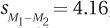, t = 0.48, r2 = 0.46%, and that the 95% for the difference between population means ranged from –6.36 to 10.36. (a) Did Dr. Goddard reject the null hypothesis? (b) What conclusion should he reach about whether his treatment works to increase IQ? (c) How big is the size of the effect as determined by r2? (d) What information does the confidence interval give on how sure we are about the impact of the IQ-increasing technique? (e) How worried are you that Dr. Goddard made a Type II error? (f) Do you recommend replicating with a larger sample size?
8.93 Dr. Brigham decided to replicate Dr. Goddard’s study (see Exercise 8.92) with a larger sample. She did exactly what Dr. Goddard did, but had 1,002 subjects (501 in the control group and 501 in the experimental group). The means for the two groups were exactly the same, 100 and 102, and both groups again had standard deviations of 15. Dr. Brigham found 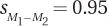, t = 2.11, r2 = 0.44%, and the 95% confidence interval ranged from .14 to 3.86. (a) Did Dr. Brigham reject the null hypothesis? (b) What conclusion should she reach about whether Dr. Goddard’s treatment increases IQ? (c) How big is the size of the effect as determined by r2? (d) What information does the confidence interval give on how sure we are about the impact of the IQ-increasing technique? (e) How worried are you that Dr. Brigham made a Type I error?
290
8.94 Compare your answers for Exercises 8.92 and 8.93. (a) What is the impact of sample size on rejecting the null hypothesis? (b) On conclusions about the effectiveness of treatment? (c) On the size of the effect as determined by r2? (d) On the confidence interval?
Data entry for an independent-samples t test in SPSS takes two columns. An example using data for the depth of processing study can be seen in Figure 8.8.
The first column, with the variable named “Depth,” contains information about each case’s status on the independent variable. SPSS calls this the “Grouping Variable” because it is used to assign cases into groups, either into the shallow processing group or the deep processing group. SPSS uses numbers, not words, to classify cases. Here, “1” means the case belongs to the shallow processing group and “2” the deep processing group. Note that all the shallow processing cases don’t have to be next to each other. As long as a case has the right group number associated with it, SPSS will correctly classify it.
The second column, with the variable named “Num_recall,” contains the dependent variable, how many words were recalled. The first case recalled 1 word, the second 3 words, the third 11 words, and so on.
Figure 8.9 shows where the independent-samples t test is located in SPSS, under “Analyze,” then “Compare Means,” and finally, “Independent-Samples T Test. . . .” When one clicks on Independent-Samples T-Test, the box shown in Figure 8.10 opens up.
In Figure 8.10, the arrow button has already been used to move the dependent variable, Num_recall, into the box for the “Test Variable(s).” The independent variable, Depth, has been moved into the “Grouping Variable” box. Note that the grouping variable now appears as “Depth(? ?),” to indicate that one needs to define the groups.
Figure 8.11 shows the box that opens up when one clicks on the “Define Groups” button in Figure 8.10. A value of 1 for “Group 1” and a value of 2 for “Group 2” were entered. Then click on the “Continue” button, which brings up the box seen in Figure 8.12.
Figure 8.12 is like Figure 8.10, but the grouping variable has been defined. We can tell SPSS to complete the t test by clicking the “OK” button.
Figure 8.13 shows all the output that SPSS provides. The first box gives descriptive statistics for the two groups. The SPSS results match Dr. Villanova’s closely, though SPSS reports the standard deviations to three decimal places.
291
292
The second box of output presents the results of the t test. SPSS gives more information than we need. Just pay attention to the first row, the one that says “Equal variances assumed.” SPSS reports a negative value for the test statistic, while Dr. Villanova found a positive value. The different sign for the t values doesn’t matter because it is merely a result of which mean is subtracted from the other. Because SPSS carries more decimal places than Dr. Villanova did, its t value (6.558) is more accurate than his (6.58). Similarly, the SPSS value for the standard error of the difference (.732) is more accurate than Dr. Villanova’s (.73).
SPSS also reports degrees of freedom (36) and the exact, two-tailed significance level. If this value (here, .000) is less than or equal to .05, then reject the null hypothesis. If the value is greater than .05, then fail to reject the null hypothesis.
SPSS reports the 95% confidence interval for the difference between population means. Because SPSS subtracted the means in a different order than Dr. Villanova did, it reports the confidence interval as negative numbers, from –6.284 to –3.316. (The SPSS confidence interval is also reported with more decimal places.) Don’t let the sign become a concern—by referring back to the population means, one can figure out the direction of the confidence interval.
Finally, SPSS does not report Cohen’s d. And, unfortunately, it does not report the pooled variance so that Cohen’s d can be calculated by hand. To calculate d, go through the first five steps of Equation 8.3 to calculate .